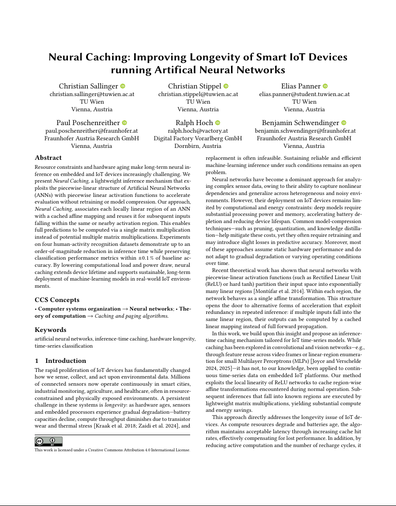
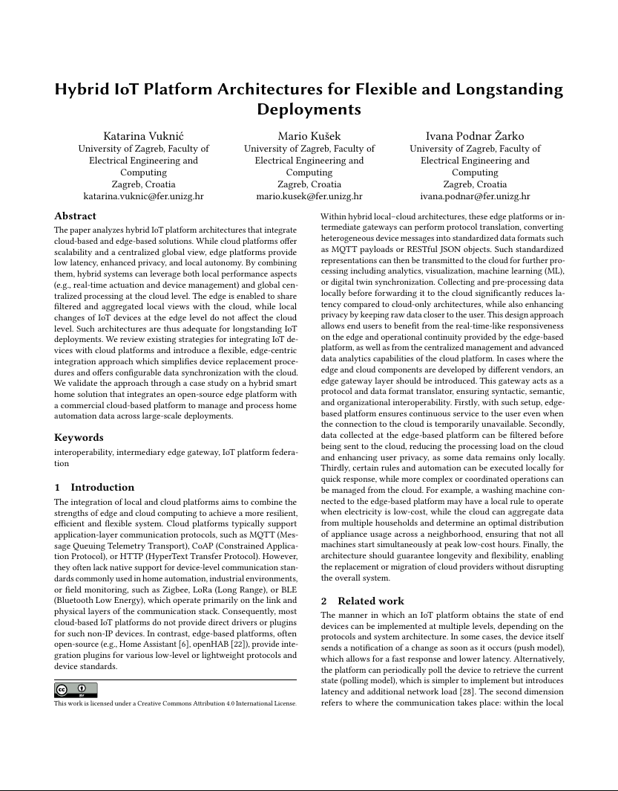
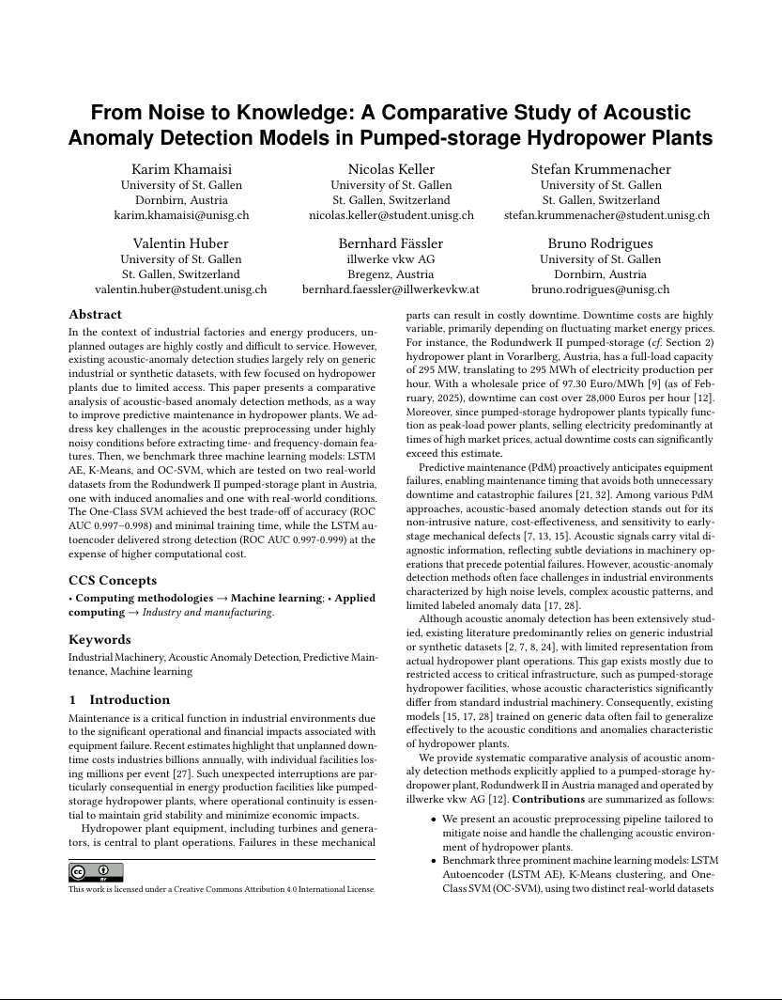

ABOUT
The premature aging of IoT systems is one of the most challenging topics that need to be addressed to enable widespread usage. Both hardware and the software that is deployed on devices from small sensor nodes to edge devices or the cloud need to be considered holistically, such that deployment lifetimes can be counted in decades not years. With ever changing communication protocols, company-specific software platforms and quickly deprecated hardware components, IoT is at the forefront of uncertain futures, and these technical challenges need to be solved for a sustainable future. In this workshop, we focus on issues arising from the brittle nature of current IoT systems.
Technical Program
IoT deployments often face premature obsolescence due to evolving protocols, fragmented software stacks, hardware heterogeneity, and aging machine-learning models, leading to costly replacements. This talk explores whether agentic AI — combining large language models with autonomous agents — can sustain IoT systems by enabling automated lifecycle management that adapts code, models, and configurations as requirements, environments, and hardware evolve. It highlights feasibility and usability aspects of running language models on edge devices while addressing open questions around collaborative edge–cloud intelligence, adaptive deployments, and model aging, with a view toward the longevity and sustainability of future IoT infrastructures.



CALL FOR PAPERS
The papers of this workshop should highlight approaches, ideas, and concepts in the field of longevity of Internet of Things systems. The main outcome of the workshop is to share the current progress in research and industry, as well as establish a community, dedicated to improve the longevity and sustainability of IoT systems.
The main topics of interests include (but are not limited to):
- Abstractions and Digital Twins for fewer constraints
- Adaptive processing of IoT data streams
- Aging AI models
- Continuous and lifelong learning for IoT applications
- Flexible deployments
- Real-world examples and case studies
- Retrofitting features and security
- Software design patterns for sustainable/robust IoT
- Software update planning
We invite researchers, practitioners, and industry experts to submit original contributions addressing these topics or related areas. Join us in exploring innovative solutions and fostering discussions to shape the future of sustainable IoT systems.
Important Dates*
| Paper submission: | ||
| Author Notification: | ||
| Camera-ready Submission: | ||
| Workshop Date: | November 18th, 2025 |
| Paper submission: | |
| Author Notification: | |
| Camera-ready Submission: | |
| Workshop Date: | November 18th, 2025 |
September 17 September 26, 2025 (extended)
September 29 October 6, 2025 (extended)
October 22 October 29, 2025 (extended)
Workshop Date:
November 18th, 2025
* All dates are AoE (check it here).
SUBMISSION GUIDELINES
Regular papers should present novel perspectives within the scope of the workshop. Papers must be in PDF format and contain 6-8 pages maximum (including references). Papers should not contain names and affiliations of the authors (double-blinded review process). All papers must be typeset in the official ACM Primary Article Template. Submissions must be made via EasyChair. The LaTeX templates, as well as related information, can be found at the ACM website (or at Overleaf).
LongevIoT will be held in conjunction with ACM IoT 2025. All accepted papers will be published by TU Wien Bibliothek and will be made open-access. At least one author will be required to present the paper during the workshop (only in-person allowed) and has to have a full registration at the conference (visit the conference's website for more details on the registration).
Submission link: here
REGISTRATION
Each accepted workshop paper requires at least one full conference registration. Otherwise, the paper will be withdrawn from publication. The authors of all accepted papers must guarantee that their paper will be presented at the workshop. Papers not presented at the workshop will be considered as a "no-show" and it will not be included in the proceedings.
Please reach out to the workshop organizers if you require an invitation letter.
Registration link: here
COMMITTEES
Organizing Committee

Peter Zdankin University of Duisburg-Essen
Technical Program Committee

Chao Qian University of Duisburg-Essen

Koojana Kuladinithi TU Hamburg

Stephan Sigg Aalto University